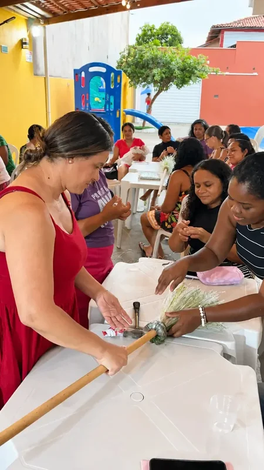
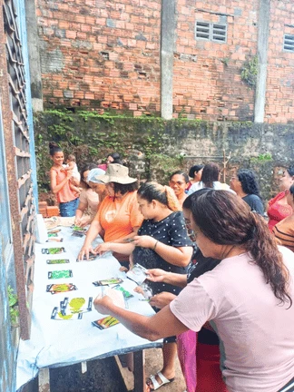
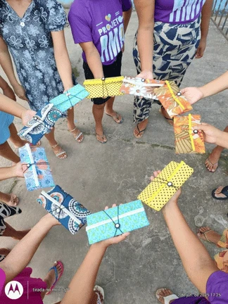

Mulheres Empreendedoras
O Projeto Mulheres Empreendedoras transforma o conhecimento prático de mães e moradoras da comunidade em renda real e independência financeira. Através de oficinas de gastronomia artesanal, confeitaria, produção de geleias, artesanato e horticultura orgânica, as participantes aprendem técnicas de produção, precificação, higiene e gestão de pequenos negócios.

Autonomia Financeira e Empreendedorismo de Impacto
Selo AMA de Origem
Concedido aos produtos manufaturados pelas mulheres empreendedoras da comunidade (artesanato, culinária e costura), atestando produção ética, sustentável e de valor comunitário.
- ✓ Certificação de origem e qualidade para feiras e parceiros
- ✓ Agregação de valor e identidade cultural maoaense
- ✓ Acesso a novos canais de distribuição B2B e mercados locais
Gestão Financeira & Precificação
Controle de custos, fluxo de caixa e precificação justa de produtos e serviços.
Marketing Digital & Vendas
Uso de redes sociais, fotografia de produtos e vendas pelo WhatsApp Business.
Mentoria 1 para 1
Acompanhamento individualizado com especialistas para o plano de negócios e formalização.
Mulheres na Horta Orgânica Comunitária
Iniciativa voltada à capacitação, valorização e inclusão produtiva de mulheres através do cultivo sustentável de alimentos saudáveis, unindo segurança alimentar, geração de renda e educação ambiental.
Horta Orgânica Comunitária
Cultivada na própria comunidade, a horta produz hortaliças livres de agrotóxicos para complementação alimentar de crianças e idosos cadastrados no Instituto AMA.
- ✓ Produção agroecológica e comunitária sem defensivos químicos
- ✓ Educação ambiental e oficinas de cultivo para voluntários
- ✓ Distribuição direta e fresca para as famílias atendidas

Catálogo de Impact Gifting (Presentes Corporativos B2B)
Kit Dueto de Geleias Gourmet
Potes artesanais produzidos pelas mulheres da comunidade com embalagem de presente corporativo e Selo de Origem.
Kits de Biscoitos & Café Familiar
Biscoitos artesanais de castanha acompanhados de café moído localmente em caixas Kraft sustentáveis.
Ecoprodutos de Reciclagem PET
Estojos, organizadores e bolsas confeccionados a partir de tecidos reciclados de garrafas PET.
Oficinas e Produção Comunitária
Imagens das feiras de empreendedorismo, cultivo da horta orgânica, oficinas manuais e capacitações promovidas pelo Instituto AMA.
Capacitação em Produção e Gestão
Cultivo Sustentável de Alimentos

Produtos Certificados pela Comunidade
Protagonismo e Renda Própria
Apóie o Empreendedorismo Feminino
Sua colaboração financia insumos para oficinas, kits de inicialização de micro-negócios e mentorias para as mulheres da comunidade.
Outros Projetos do Instituto AMA
Qualificação Profissional
Formação técnica e inclusão no mercado de trabalho.
Saiba mais →